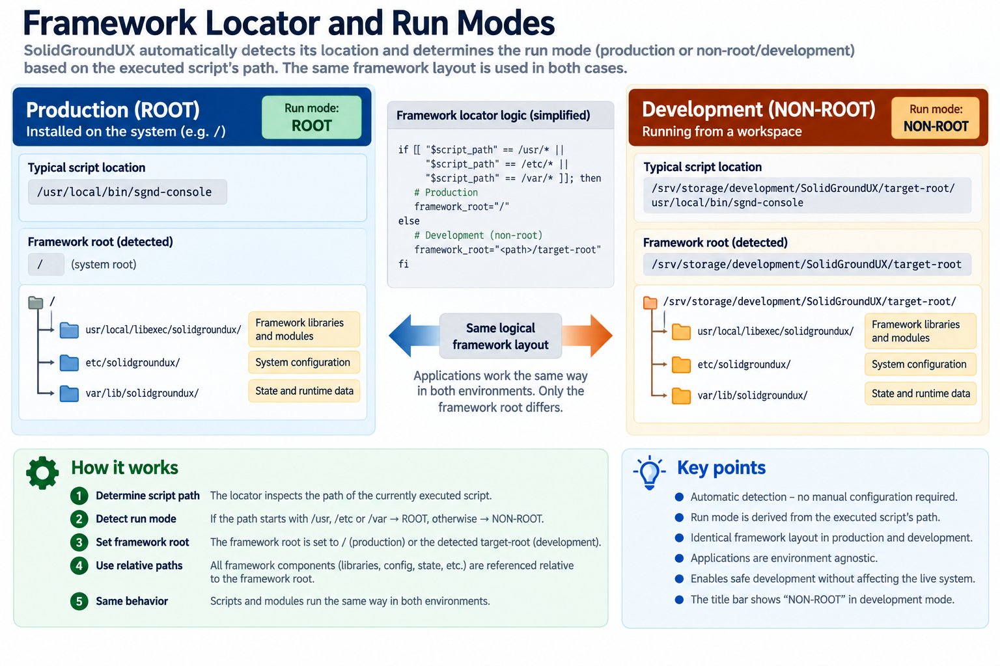

SolidGroundUX does not assume that the framework is installed at the filesystem root. The framework locator determines SGND_FRAMEWORK_ROOT from the location of the executing script, allowing the same logical filesystem layout to be used in both installed and development environments.
When running from the normal system locations, the framework root is `/`. When running from a development `target-root`, that directory becomes the framework root instead. Framework paths are then resolved relative to that root.

This allows development copies to behave like an installed framework without modifying the live system. Executables running from a non-root framework display `NON-ROOT` in the title bar to make the active environment immediately visible.